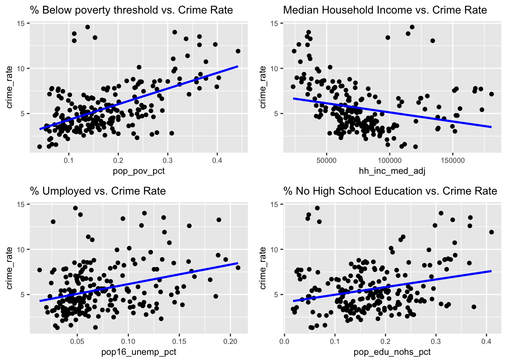
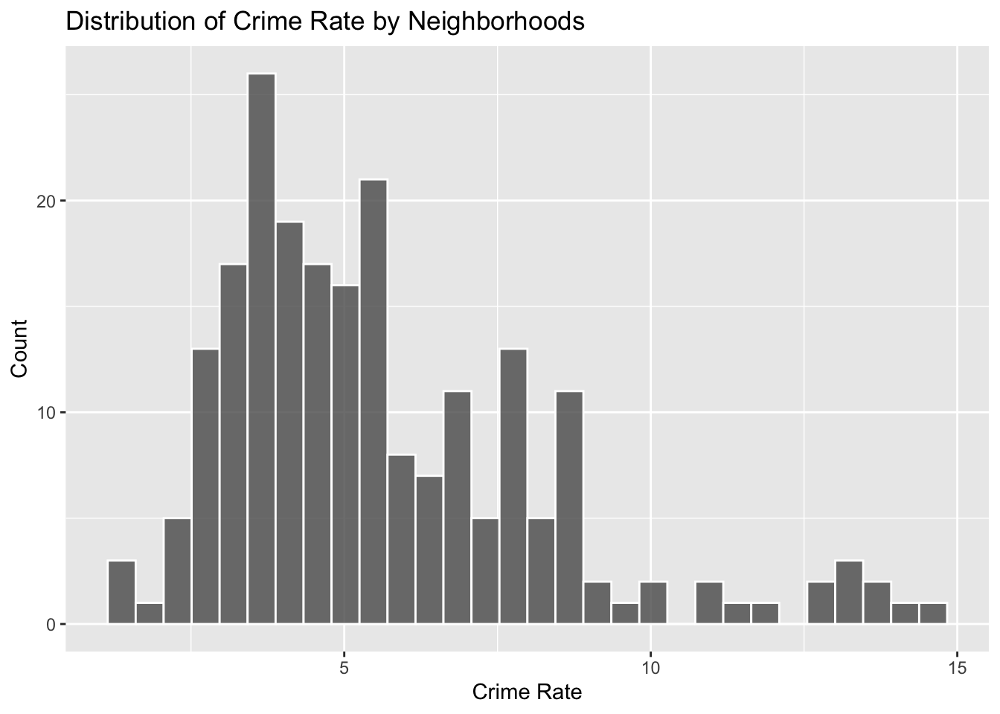
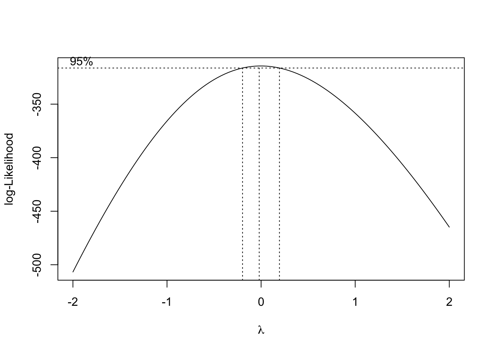
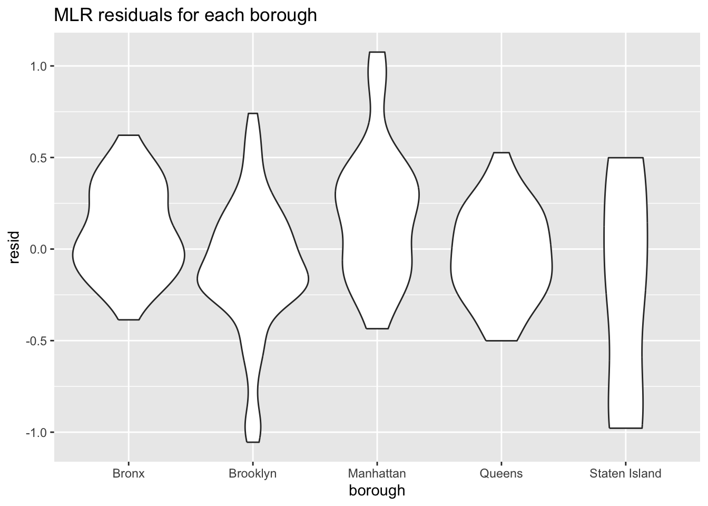

Crime Rate Analysis
We are interested in exploring whether socioeconomic factors are associated or can be used as predictors to assess crime rate. Since our NYPD complaint dataset only contains individual complaints, we utilized a socioeconomic indicator dataset (INSERT LINK: NYU Furman Center) to gather population data for each borough and neighborhood.
To better conduct regression analysis, we have calculated the crime rate for each neighborhood as the following: Crime Rate = (Total number of complaints in a neighborhood in a given year / Total population in a neighborhood in a given year) * 100,000
# df_nypd = read_csv("https://www.dropbox.com/scl/fi/kf2zk4t1onxzm2vo3lpkq/NYPD_Complaint_Data_Historic.csv?rlkey=ly36vi9v66sno80eir6rohlwn&dl=1", na = "(null)") |> # some values are coded as "(null)" in the df; rewrite them as NA
# janitor::clean_names()
df_nypd = read_csv("data/NYPD_Complaint_Data_Historic.csv") |>
janitor::clean_names()
#Reading in the dataset that map each precinct to a neighborhood, for further SES analysis
prec_neighbor = read_csv("data/nyc_prec_neighborhood.csv")
#Merging `prec_neighboor` with NYPD dataset, conducting more data cleaning. The resulting `nypd_ses_df` only contains variables of interest for SES analysis. `nypd_ses_df` now contains neighboorhood information, as well as other necessary data from the original master data
nypd_ses_df = df_nypd |>
select(cmplnt_num, cmplnt_fr_dt, addr_pct_cd, crm_atpt_cptd_cd, law_cat_cd, susp_age_group, susp_race, susp_sex, vic_age_group, vic_race, vic_sex, ofns_desc, pd_desc) |>
rename(precinct = addr_pct_cd) |>
mutate(cmplnt_fr_dt = as.Date(cmplnt_fr_dt, format = "%m/%d/%Y"),
year = format(cmplnt_fr_dt, "%Y")) |>
left_join(prec_neighbor, by = "precinct")
#Reading in the SES data for demographics information for each precinct/neighboorhood, and only keeping the relevant SES indicators. `neighbor_ses` df includes information on population, income, umemployment, poverty, education, and racial factors for every neighborhood.
neighbor_ses = readxl::read_excel("data/neighorhood_indicators.xlsx", sheet = "Data") |>
janitor::clean_names() |>
filter(region_type == "Sub-Borough Area") |>
rename(neighborhood = region_name) |>
select(neighborhood, year, pop_num, hh_inc_med_adj, pop16_unemp_pct, pop_edu_collp_pct, pop_edu_nohs_pct, pop_pov_pct, pop_race_asian_pct, pop_race_black_pct, pop_race_hisp_pct, pop_race_white_pct, pop_foreign_pct) |>
filter(year %in% c(2017, 2018, 2019, 2021)) #2020 and 2022 data missing
neighbor_rent = readxl::read_excel("data/neighorhood_indicators.xlsx", sheet = "Data") |>
janitor::clean_names() |>
filter(region_type == "Sub-Borough Area") |>
rename(neighborhood = region_name) |>
filter(year == "2017-2021") |>
select(neighborhood, gross_rent_0_1beds, gross_rent_2_3beds)
# Now, calculate the crime rate for every precinct. Crime rate is calculated by dividing the number of crimes committed per neighborhood over the total population of that neighborhood, then times 100,000. Then merge the crime rate data with other relevant socioeconomic data. We focus only on the 2021 data. `ses_df` contains crime rate and other SES data per neighborhood, by year
ses_df = nypd_ses_df |>
group_by(year, borough, neighborhood) |>
summarise(crime_num = n())
ses_df = ses_df |> merge(neighbor_ses, by = c("year", "neighborhood")) |>
mutate(crime_rate = (crime_num/pop_num) * 100,000) |>
left_join(neighbor_rent, by = "neighborhood")Linear Regression
Visualization of potential association
We start by visualizing potential association between factors that we hypothesize to impact crime rate, these are poverty, unemployment, income, and education.
eda_plot1 = ses_df |> ggplot(aes(x = pop_pov_pct, y = crime_rate)) +
geom_point() +
geom_smooth(method = "lm", se = FALSE, color = "blue") +
labs(title = "% below poverty threshold vs. Crime Rate")
eda_plot2 = ses_df |> ggplot(aes(x = hh_inc_med_adj, y = crime_rate)) +
geom_point() +
geom_smooth(method = "lm", se = FALSE, color = "blue") +
labs(title = "Median Household Income vs. Crime Rate")
eda_plot3 = ses_df |> ggplot(aes(x = pop16_unemp_pct, y = crime_rate)) +
geom_point() +
geom_smooth(method = "lm", se = FALSE, color = "blue") +
labs(title = "% umployed vs. Crime Rate")
eda_plot4 = ses_df |> ggplot(aes(x = pop_edu_nohs_pct, y = crime_rate)) +
geom_point() +
geom_smooth(method = "lm", se = FALSE, color = "blue") +
labs(title = "% without High School Education vs. Crime Rate")
gridExtra::grid.arrange(
eda_plot1, eda_plot2, eda_plot3, eda_plot4, ncol = 2)
It is observed that there is a stronger positive association between percentage of poverty population with crime rate; a weaker positive association between unemployment and lack of education with crime rate, and a negative association between median household income and crime rate.
Data transformation for MLR
Let’s first visualize the distribution of crime rate:
ses_df |> ggplot(aes(x = crime_rate)) +
geom_histogram(alpha = 0.8, color = "white") +
labs(
x = "Crime Rate" ,
y = "Count",
title = "Distribution of Crime Rate by Neighborhoods")
Since the data is slightly right-skewed, we can use the Box-Cox Transformation to transform the data for linear fit
initial_fit = lm(crime_rate ~ pop_pov_pct + hh_inc_med_adj + pop16_unemp_pct + pop_edu_nohs_pct + pop_race_asian_pct + pop_race_black_pct + pop_race_hisp_pct + pop_race_white_pct + pop_foreign_pct, data = ses_df)
MASS::boxcox(initial_fit)
From the Box-Cox Transformation, log-transformation seems to be the best option. We will perform a log transformation on crime rate and use this as the predictor.
Model fitting
To achieve the best model, we will use a “manual” backward elimination approach: first by fitting a MLR with all possible factors, and gradually remove factors that are not significant.
ses_df = ses_df |> mutate(
log_crime_rate = log(crime_rate)
)
log_fit = lm(log_crime_rate ~ pop_pov_pct + hh_inc_med_adj + pop16_unemp_pct + pop_edu_nohs_pct + pop_race_asian_pct + pop_race_black_pct + pop_race_hisp_pct + pop_race_white_pct + pop_foreign_pct, data = ses_df)
summary(log_fit)##
## Call:
## lm(formula = log_crime_rate ~ pop_pov_pct + hh_inc_med_adj +
## pop16_unemp_pct + pop_edu_nohs_pct + pop_race_asian_pct +
## pop_race_black_pct + pop_race_hisp_pct + pop_race_white_pct +
## pop_foreign_pct, data = ses_df)
##
## Residuals:
## Min 1Q Median 3Q Max
## -0.73689 -0.19577 -0.00971 0.17691 1.09847
##
## Coefficients:
## Estimate Std. Error t value Pr(>|t|)
## (Intercept) 5.922e-01 1.018e+00 0.582 0.56137
## pop_pov_pct 5.315e+00 5.653e-01 9.403 < 2e-16 ***
## hh_inc_med_adj 9.872e-06 1.457e-06 6.775 1.28e-10 ***
## pop16_unemp_pct -1.384e+00 7.481e-01 -1.851 0.06567 .
## pop_edu_nohs_pct -1.716e+00 6.400e-01 -2.681 0.00793 **
## pop_race_asian_pct -3.306e-01 1.041e+00 -0.318 0.75118
## pop_race_black_pct 1.300e-01 1.007e+00 0.129 0.89739
## pop_race_hisp_pct 2.961e-01 9.690e-01 0.306 0.76023
## pop_race_white_pct -1.050e+00 9.846e-01 -1.067 0.28741
## pop_foreign_pct 2.877e-02 2.901e-01 0.099 0.92108
## ---
## Signif. codes: 0 '***' 0.001 '**' 0.01 '*' 0.05 '.' 0.1 ' ' 1
##
## Residual standard error: 0.2986 on 206 degrees of freedom
## Multiple R-squared: 0.5819, Adjusted R-squared: 0.5636
## F-statistic: 31.86 on 9 and 206 DF, p-value: < 2.2e-16According to the MLR fit result, three factors are significant: percentage of population below poverty line, median household income, and percentage of population above 25 years old without high school degree.
We will fine tune our model based on this three factors.
log_fit_optimized = lm(log_crime_rate ~ pop_pov_pct + hh_inc_med_adj + pop_edu_nohs_pct, data = ses_df)
summary(log_fit_optimized)##
## Call:
## lm(formula = log_crime_rate ~ pop_pov_pct + hh_inc_med_adj +
## pop_edu_nohs_pct, data = ses_df)
##
## Residuals:
## Min 1Q Median 3Q Max
## -1.06232 -0.20232 -0.00345 0.23603 1.05242
##
## Coefficients:
## Estimate Std. Error t value Pr(>|t|)
## (Intercept) 4.521e-01 1.982e-01 2.281 0.023556 *
## pop_pov_pct 4.761e+00 4.546e-01 10.473 < 2e-16 ***
## hh_inc_med_adj 5.377e-06 1.391e-06 3.866 0.000147 ***
## pop_edu_nohs_pct -4.502e-01 4.927e-01 -0.914 0.361884
## ---
## Signif. codes: 0 '***' 0.001 '**' 0.01 '*' 0.05 '.' 0.1 ' ' 1
##
## Residual standard error: 0.3555 on 212 degrees of freedom
## Multiple R-squared: 0.3901, Adjusted R-squared: 0.3814
## F-statistic: 45.19 on 3 and 212 DF, p-value: < 2.2e-16As we removed many insignificant predictors, education factor lost its significance as well. Our final model will only include two predictors: percentage of population below poverty line and median household income.
log_fit_optimized = lm(log_crime_rate ~ pop_pov_pct + hh_inc_med_adj, data = ses_df)
summary(log_fit_optimized)##
## Call:
## lm(formula = log_crime_rate ~ pop_pov_pct + hh_inc_med_adj, data = ses_df)
##
## Residuals:
## Min 1Q Median 3Q Max
## -1.05481 -0.20115 -0.01538 0.23201 1.07555
##
## Coefficients:
## Estimate Std. Error t value Pr(>|t|)
## (Intercept) 3.434e-01 1.585e-01 2.167 0.0314 *
## pop_pov_pct 4.644e+00 4.358e-01 10.654 < 2e-16 ***
## hh_inc_med_adj 6.049e-06 1.180e-06 5.127 6.59e-07 ***
## ---
## Signif. codes: 0 '***' 0.001 '**' 0.01 '*' 0.05 '.' 0.1 ' ' 1
##
## Residual standard error: 0.3554 on 213 degrees of freedom
## Multiple R-squared: 0.3876, Adjusted R-squared: 0.3819
## F-statistic: 67.42 on 2 and 213 DF, p-value: < 2.2e-16Both of these 2 predictors are significant. We can also check for multicollinearity of our optimized model
performance::check_collinearity(log_fit_optimized)## # Check for Multicollinearity
##
## Low Correlation
##
## Term VIF VIF 95% CI Increased SE Tolerance Tolerance 95% CI
## pop_pov_pct 2.38 [1.97, 2.97] 1.54 0.42 [0.34, 0.51]
## hh_inc_med_adj 2.38 [1.97, 2.97] 1.54 0.42 [0.34, 0.51]Multicollinearity is low between our two predictors and is within the acceptable range.
MLR model diagnostics
We can run a regression diagnostic by plotting residuals for each borough:
ses_df |>
modelr::add_residuals(log_fit_optimized) |>
ggplot(aes(x = borough, y = resid)) + geom_violin() +
labs(title = "MLR residuals for each borough",
xlab = "Borough",
ylab = "Residuals")
We can further inspect our model by plotting residuals against fitted values
ses_df |>
modelr::add_residuals(log_fit_optimized) |>
modelr::add_predictions(log_fit_optimized) |>
ggplot(aes(x = pred, y = resid, color = borough)) + geom_point() +
labs(title = "MLR residuals against fitted value",
xlab = "Residuals",
ylab = "Fitted Values")
From the two diagnostics plots above, we can see that the residuals are roughly centered around zero, and are relatively normal. This would indicate that our model is a relatively good fit.
Discussion
From this model, we conclude that the crime rate for a specific neighborhood is highly associated with the percentage of people below poverty line, and the median household income. From diagnostic analysis, the multicollinearity between the 2 factors are low, and our model is a relatively good fit by inspecting residuals and fitted values.